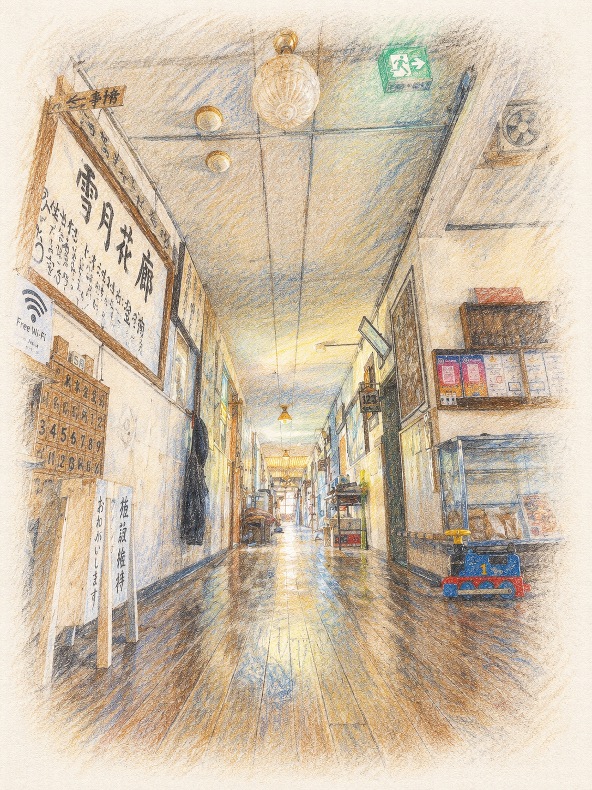
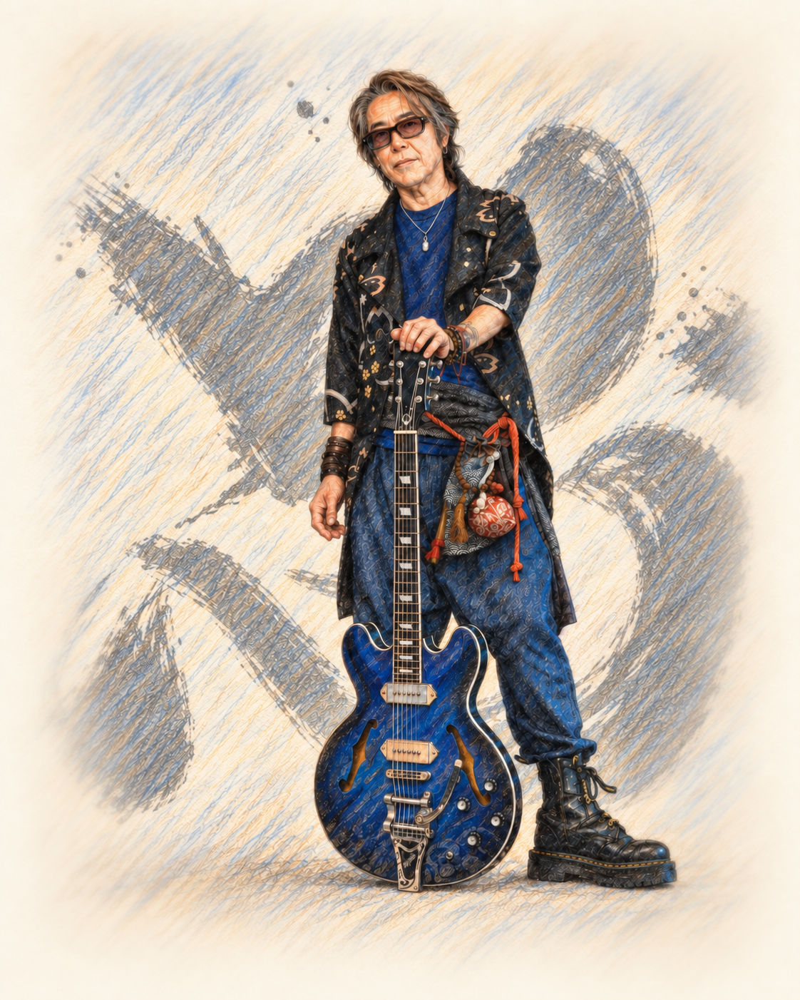
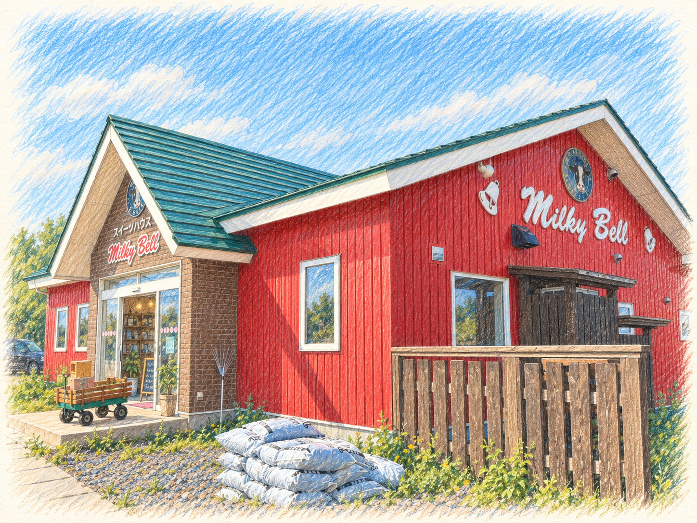

01
雪月花廊
通りから少し奥まったところにあり、それでいて不思議と存在感のあるライダーハウス。
初めてふらっと立ち寄った日に、いきなり本格的な屋根の雪下ろしを手伝うことになり、そのおかげで廊主だったととさんと仲良くなりました。
ととさんはすでに他界されましたが、その想いはかかさんへしっかり受け継がれ、今も世界中から人が集まっています。
ここでの出逢いは、ボクの人生にも大きな影響を与えてくれました。
訪ねてみる
KOTOBABITO
寄り道の途中で出逢った、仲間たち。
歩いていれば、ふと出逢える場所がある。
そこには、あたたかなひとや、やさしい時間が待っている。
ここは、そんな寄り道の記録です。

01
通りから少し奥まったところにあり、それでいて不思議と存在感のあるライダーハウス。
初めてふらっと立ち寄った日に、いきなり本格的な屋根の雪下ろしを手伝うことになり、そのおかげで廊主だったととさんと仲良くなりました。
ととさんはすでに他界されましたが、その想いはかかさんへしっかり受け継がれ、今も世界中から人が集まっています。
ここでの出逢いは、ボクの人生にも大きな影響を与えてくれました。
訪ねてみる02
結成一年だったソーセージの二人と出逢ったのは、雪月花廊。
ととさんの強烈なパワーに引き寄せられるように出逢い、今でもお互いに影響し合いながら活動を続けています。
今ではメンバーも4人になり、ロックでありながら、熱くて優しい。奏でる曲は、どれも心と耳に残るものばかり。
CDももちろんありますが、ボクが絶対的にオススメするのは、やっぱりLiveです！
音を聴きにいく
03
ソーセージのメンバー、晴志さん。バンド活動に加え、長年ツアーミュージシャンとしても活動している、北陸のハッピーマン・SEiZI。
ソーセージのみんなとはそれぞれ仲良くしていますが、特に晴志さんとはアプリ電話で夜な夜な語り合ったり、一緒に作品を作ったりと、かなり深い関係にあります(￣▽￣)
お互いに響き合い、一緒に奏でる。響奏の仲間です。
晴志さんの世界へ
04
代表のたかしくんとは、ボクが路上詩人を始めるずっと前からの仲。
家にも何度も泊めてもらって、これまたかなり深い関係です(￣▽￣)
牛乳やソフトクリームを中心に、海外でもサービスを展開するなど、幅広い感性と行動力で世界中の人たちを笑顔にしています。
優しく大切に育てられた牛さんたちから生まれる牛乳は、心に染み渡るおいしさ。
お店は北海道千歳市にあります。
ミルキーベルを見る
05
千葉県茂原市の緑に囲まれた、築140年の古民家をリノベーションしたヴィーガンレストラン。
「すいぴ」の愛称で親しまれ、全国から人が集まっています。
「命と地球環境を大切にしたい」という想いは、ここで食事をすると身体で体験・体感できるのです。
店主のなっちゃんの笑顔には、すべての命を照らすような輝きがあります。
お店の隣には、ソーセージの壮さんのスタジオ「Smoke & Peace」もあります(￣▽￣)
すいぴを訪ねる